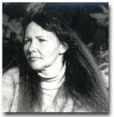

HAZEL SMITH
ENTER
SECRET PLACES
----------------------------------------------------
WORKING NOTES
on Secret Places
Secret Places
was originally a multi-media installation project, consisting of artwork,
photography, music
and text, in which I collaborated with Sieglinde Karl (artwork) Ron
Nagorcka (music), Kate Hamilton (photography) and graphic designer Lynda Warner.
It was exhibited in art galleries in Hobart, Launceston, Wagga Wagga and Melbourne,
Australia, and was accompanied by a publication. It appears here in a new
form designed for the web.
The central focus of the installation was a larger-than-life figure of a woman made by Sieglinde Karl from the needles of the native Australian Casuarina tree. In my text I responded to the "Casuarina woman" by turning casuarina into the name of a person. She is not a "character" in the normal sense but consists of multiple projections (Casuarina, Cass and Cathy) who engage the mythic, the erotic and the parodic, and can be viewed either as the same person or as different people.
I was also interested in making connections between the casuarina woman and two other stories which had inspired me. The first was a newspaper article in the Sydney Morning Herald (Sunday February 11th 1995) : Siberia's ice-maiden returns from her ancient pastures of heaven, which refers to the discovery of a woman, 2,500 years old, whose tattooed body was preserved because water trickled into her tomb and froze her. There are a number of oblique references to the Herald article in my text. These include a reference to the red-wax sealed door of the laboratory where the ice-maiden's body was being treated. Red seal (as the article mentions) was also to be found, in the Stalinist era, on the doors of the homes of purge victims who were taken away in the middle of the night by the secret police.
The second story
was one I heard told on the television by a survivor of the
holocaust. Many
things about the story fascinated me, not only the woman's survival against
all odds, and her resurrection from near-death, but also her desire to go
on living even
though her entire family (including her daughter) had been killed in front
of her.
As I began to connect these stories I found myself moving between different points in the past and present, different locations, and different voices. Ideas sparked other ideas and many new relationships developed. So the "blood red door" is juxtaposed with the doors of the local school in Yuendumu, an Aboriginal community in central Australia which I visited briefly in 1995. These doors were decorated with Aboriginal paintings of the dreamings as part of a collective project in the early 1980s and are documented in Warlukurlangu Artists, Yuendumu Doors, Aboriginal Studies Press, Canberra, 1992. When I saw the paintings they were overlaid with graffiti, though parts of the original paintings could still be seen. (They can now be viewed in the South Australian Art Gallery in Adelaide: the graffiti have been removed).
Throughout the piece I wished to intertwine a number of psychological, historical and geographical realities, and negotiate some of the concealed aspects of mind and body, the secret places.
ENTER SECRET PLACES
BIO:
Hazel Smith (h.smith@unsw.edu.au)
Hazel Smith
was born in England and lived there until 1989, but now lives in Sydney
Australia.
She works in the areas of poetry, experimental writing, performance, multi
media and hypertext.
Hazel has published in numerous poetry magazines, literary journals
and web-journals, and her work is represented in several anthologies.
Her book Abstractly
Represented: Poems and Performance Texts 1982-90 was published
by Butterfly Books in 1991. Two CDs of her performance work Poet Without
Language with austraLYSIS, and Nuraghic Echoes (in collaboration
with Roger
Dean), were released by Rufus Records, Sydney, in 1994 and 1996 respectively.
A number of her collaborative hypermedia works are available on CD Rom,
or on the World Wide Web, including Walking The Faultlines, (with
Roger Dean)
which is featured on Cyberquilt: A CD- Rom Anthology, International
Computer Music
Association, San Francisco, and Wordstuffs: the City and the Body,
(with Roger Dean and Greg White), commissioned by the Australian Film
Commission
and available at www.stuff-art.abc.net.au/stuff98/10.htm. Her new volume
of poems, short prose and performance texts, Keys Round Her Tongue,
will be published
by Monogene this year.
Hazel is a Senior Lecturer
in the School of English, University of New South Wales and
is co-author with Roger Dean of the book Improvisation, Hypermedia And
The Arts
Since 1945 published by Harwood Academic in 1997. Her book
Hyperscapes
in the Poetry of Frank O'Hara: difference, homosexuality,
topography
is to be published by Liverpool University Press in 2000. Hazel has also
been an internationally
active violinist and features as soloist on several commercial recordings.
BIO:
Sieglinde Karl
Sieglinde
Karl (born 1943) spent her childhood years in Germany before emigrating
to Australia
in 1953. After extensive periods living in Germany
and England, she now works
in Launceston, Tasmania, Australia.Sieglinde
graduated as a jeweller from Middlesex
Polytechnic, London, in 1978.
Since the late 1980s, her practice has focused
on installation and performance,
involving works of a site-specific and/or transitory
nature using
predominantly found natural materials. She has collaborated on various
projects with Hazel Smith, as well as musicians, dancers and other
visual artists.
Her work has been widely exhibited, collected and published
in many parts of the
world. Sieglinde
Karl, l9 Denman Road, Launceston, Tasmania, 7250. Australia
ENTER SECRET PLACES